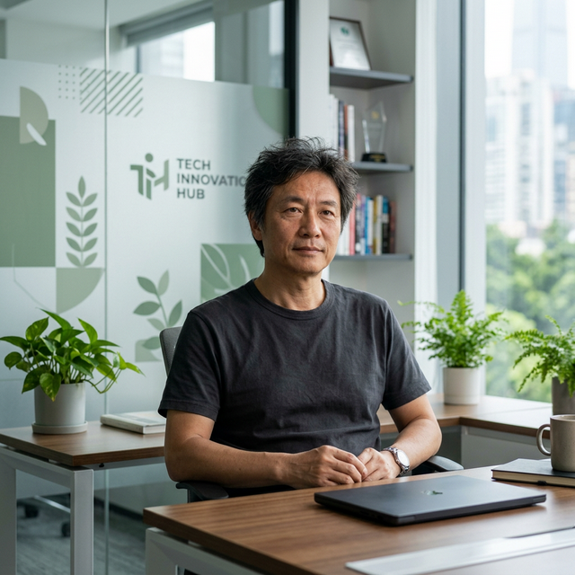

[ PROFILE_010 · CONTAINER ARCHITECT ]

张小龙
微信之父 · Foxmail 创造者 · QQ邮箱七星级产品缔造者
用最简单的规则，承载最复杂、最真实的人类关系
1969 — · 湖南邵阳
他的经历
他的问题
❓ 怎样用最简单的规则，承载最复杂、最真实的人类关系？
- → 从 Foxmail 到 QQ邮箱到微信，始终围绕「沟通」与「关系」的产品表达
- → 产品哲学不是"加更多功能"，而是"删到只剩本质"
- → 反复强调"降低社会性压力""培育而非干预"——关心的不是技术，而是人性
- → 微信不是工具，而是环境；朋友圈经历40次推翻后几乎无需修改
- → 真正的问题：如何设计最小的规则，而不是控制结果
我的分析
🏷️ 一个词
容器
🔑 最小的规则是什么？
让每个关系都有成本，但都可以退出。
- 规则 1：任何触达都要成本（防滥用）
- 规则 2：任何关系都能无代价退出（防恐惧）
🧊 他的性格：一个冷思维、暖动机的人
- 高度抽离，永远站在系统层看人类行为。对人类没有浪漫幻想也不失望，只研究机制
- 极高的"感受力"，但不展示情绪。不要求被理解，但要求自己理解世界
- 天生反感"权威、装腔、集体认同感"。独立判断，而不是主流认同
- 冷幽默 + 实验室式恶趣味
- 孤独的，但不依赖任何人来治愈
- 极端自信 + 极端谨慎。非常骄傲，但不会炫耀
- 卓越的产品经理，却不是一个愿意带大规模人群的 CEO
产品设计哲学
精选自「微信产品设计80个为什么」
微信是怎么诞生的？
张小龙在 2010 年 11 月的一个深夜给马化腾写了封信："我们应该做一个类似 kik 的产品"。马化腾回复了4个字：马上就做。微信团队复用了 QQ 邮箱的 HTTP 协议后台，所以每次发送一条微信消息，就真的是在发送一封微型的邮件。
微信怎么进行版本规划？
每个版本之间没有任何计划，上一个版本发布了才开始想下个版本做什么。一个月前的想法和今天的想法已经有区别了，所以在最后一刻才决定的东西才能符合最新思路的变化。但这不意味最后一刻才开始想——整个过程里每天都在想有哪些东西值得做。
— 张小龙
最关注的体验是什么？
操作的响应速度永远是第一体验。QQ 邮箱能做起来有两点最重要：第一是简单，第二是速度快。合起来是「简捷」。朋友圈的时间线做了很多次重构才保证了流畅体验，代价很大，但值得。
— 张小龙
为什么微信只有4个Tab？
Tony（腾讯前CTO张志东）经常想加Tab。我跟 Tony 定了一个君子协议：两年之内微信只有4个Tab。4个最简单了，一旦变成5个就变复杂了，对整个产品会有破坏性的打击。做朋友圈的时候也没放成第五个Tab。
— 张小龙
为什么微信没有已读状态？
微信的产品理念认为接收方体验大于发送方。钉钉的已读状态让发送方很爽，但让接收方很有压力——看到了不代表现在想回。所有产品体验都是基于产品原则作出的决策，需要先建立起自己的产品原则。
— Genie（微信产品经理）
为什么设计很"克制"？
克制这个词从来没有在我的脑袋里面出现过。我们在做决定时并不是自我压制。相反，我们要判断什么是最合理的。我们会舍弃掉很多想做但做不好的东西——这不是克制，是发现很多事情做不好、很多决定一开头是错的、很多想法验证行不通。
— 张小龙
为什么说"好的产品用完即走"？
上半句是"用完即走"，下半句是"走了还会回来"。任何工具都是帮助用户完成任务，越高效越好。如果把两个小时的任务延续到三个小时，那只是效率降低。只有当用户用得很愉悦、很高效，他才会下一次回来。微信永远不会把用户停留时长作为目标。
— 张小龙
为什么朋友圈不做滤镜？
真正的生活状态不应该有滤镜。开始做了，后来删掉了。张小龙有这个执念，让世界还原真实。我们对特性的设计是非常主观的，跟产品的价值观和态度密切相关。
— 陆树燊（微信创始团队）
对用户称呼为什么用"你"而不是"您"？
我们并不需要用很尊敬的态度称呼用户，而是应该当朋友一样。应该是一种很平等的关系。这个写进了产品条约里面。
— 张小龙
为什么要做视频号？"号"比"视频"更重要？
视频号的意义，与其说是视频，不如说是"号"。有了公开的号，意味着每个人有了公开发声的身份。ID 才是基石——它可以承载视频、直播、小程序等。未来如果每个广告牌下都有视频号二维码，就说明做成了想要的官网了。
— 张小龙
社交推荐 vs 机器推荐？
我一直很相信通过社交推荐来获取信息是最符合人性的。我自己这些年看的书，没有一本是主动找的，基本都是受朋友的影响。你少看几个机器推荐的内容不会可惜，但错过朋友们都在看的内容会觉得可惜。人类进化而来的社交体系，其实是一个具有纠错功能的复杂体系。
— 张小龙
广研核心团队
| 中文 | 英文 | 角色 |
|---|---|---|
| 周颢 | Harvey | 广研助理总经理、微信中心负责人，先后负责 QQmail、微信 |
| 张颖 | xiaokang | 微信支付总经理，曾负责 QQ音乐、腾讯视频、QQ会员 |
| 曾鸣 | Lake | 产品总监，开放平台负责人，先后负责 QQmail、微信产品团队 |
| 刘乐君 | Justin | 终端开发组总监（已离职） |
| 林倩雅 | Genie | 参与 QQ邮箱、漂流瓶、朋友圈、表情产品设计（已离职，创业画音） |
| 翁乐腾 | Kink | 设计总监，微信客户端UI组组长 |
| 陈岳伟 | Lyle chen | iPhone终端开发，构建微信第一个 iOS 版本 |
| 邝飞 | QQ邮箱主设计师（已离职，创业VUE，被腾讯收购） | |
| 黄天晴 | Ts | 负责公众号（已离职，创业echo，加盟拼多多） |
| 罗智峰 | taoluo | 微信公众号技术总监（已离职，前21cn邮箱架构师） |